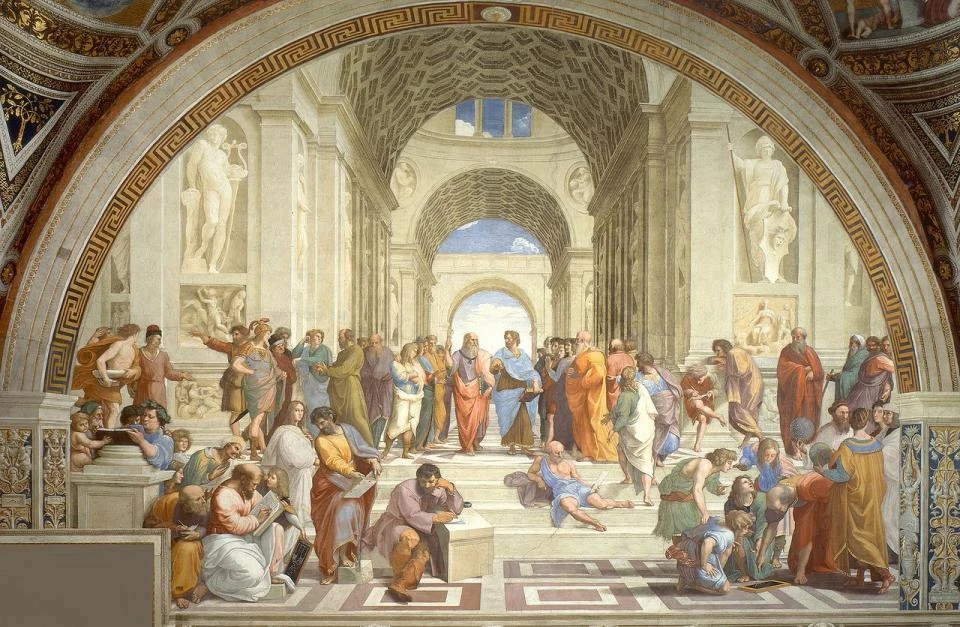
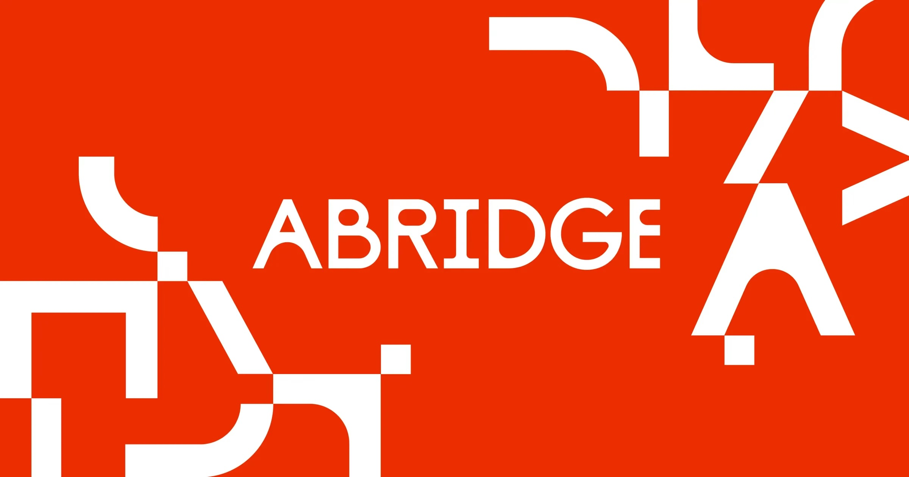
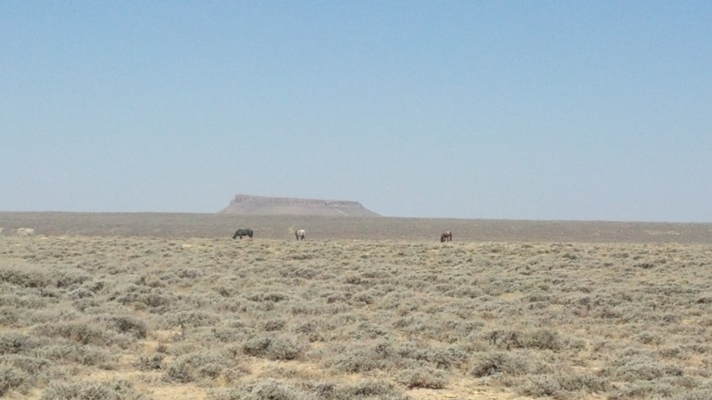
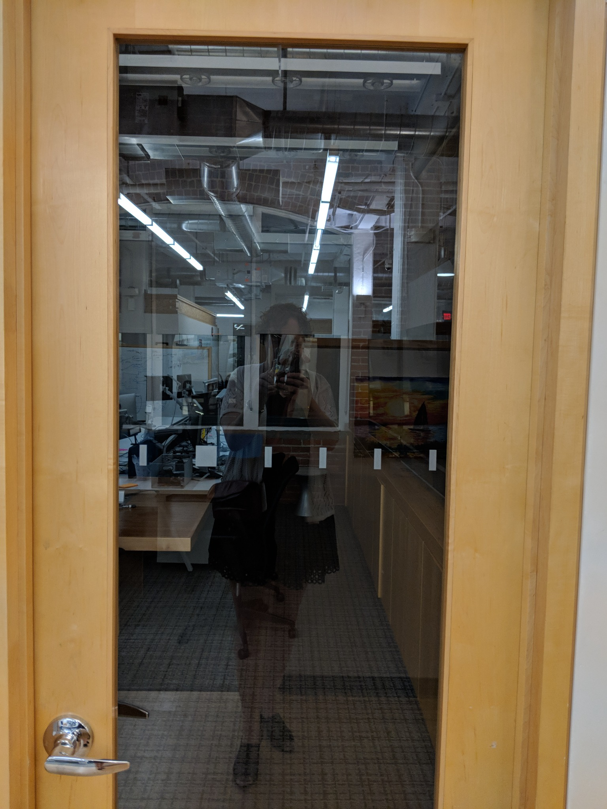
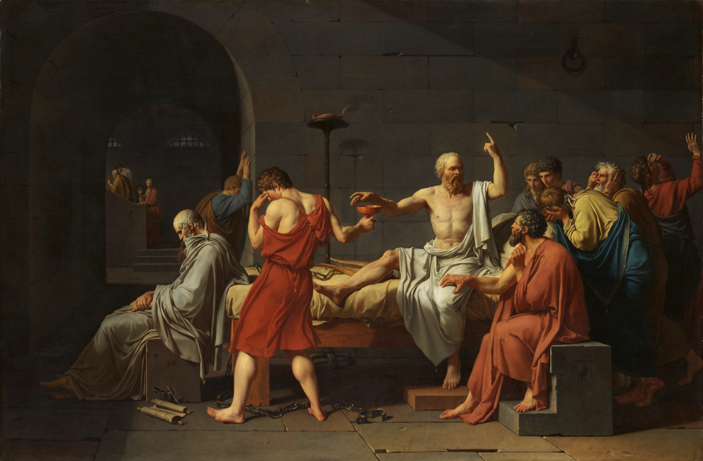
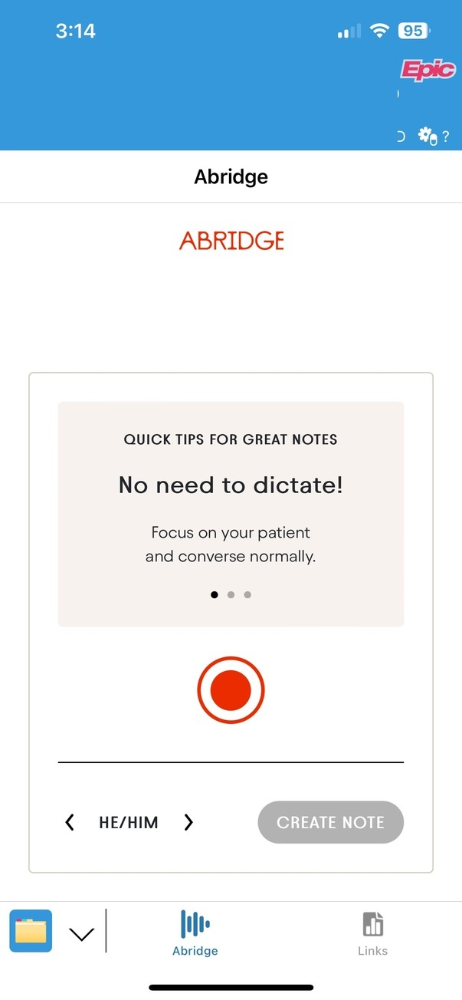
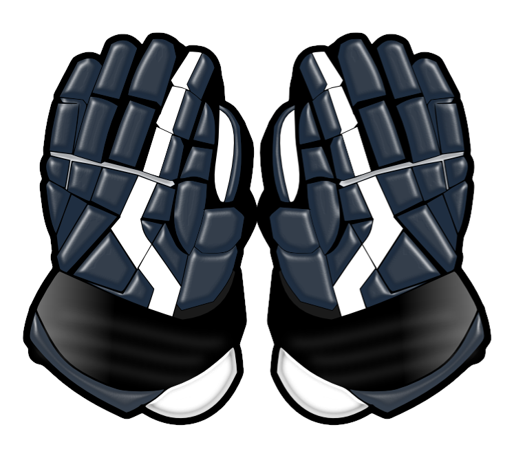
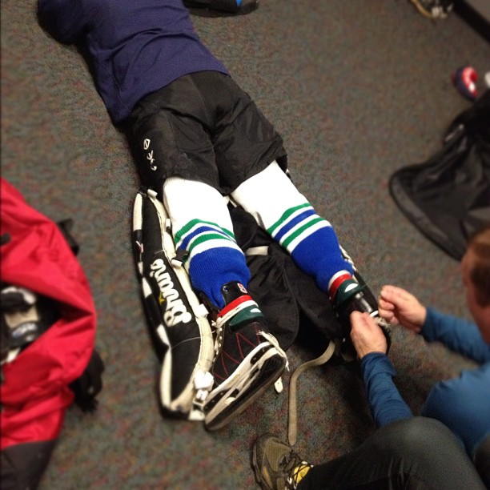

Medical note
History
Left knee pain since Saturday, following a long walk.
No fall or injury reported.
Fictional example




Greek for “love of wisdom.”
Is it fair to give everyone in a group project the same grade?
Why does it fail
only when
we’re busy?
The timing between events mattered.
Question assumptions. Test explanations.
How do you persuade a giant?
Days before launch…
Better for both
Can someone else
follow your
reasoning?
≈100
documents
at Amazon
Explain the idea. Help the team decide.
What work
am I willing
to do?
Scott Reid’s office:
I wanted to do technical work.

Speak honestly about where you can contribute.

History
Left knee pain since Saturday, following a long walk.
No fall or injury reported.
Fictional example
History
Left knee pain since Saturday, following a long walk.
No fall or injury reported.
Fictional example


Used junior goalie pads · $80 CAD
Then ask, “What’s one small experiment I could run this week?”